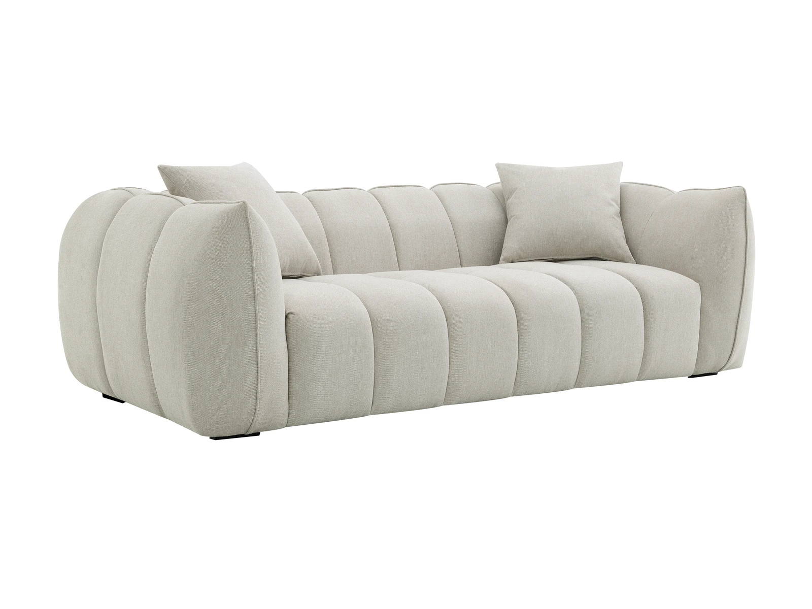
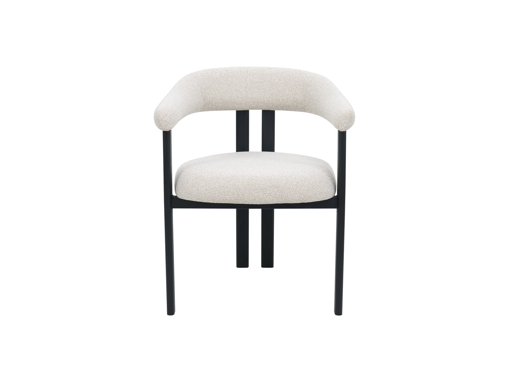
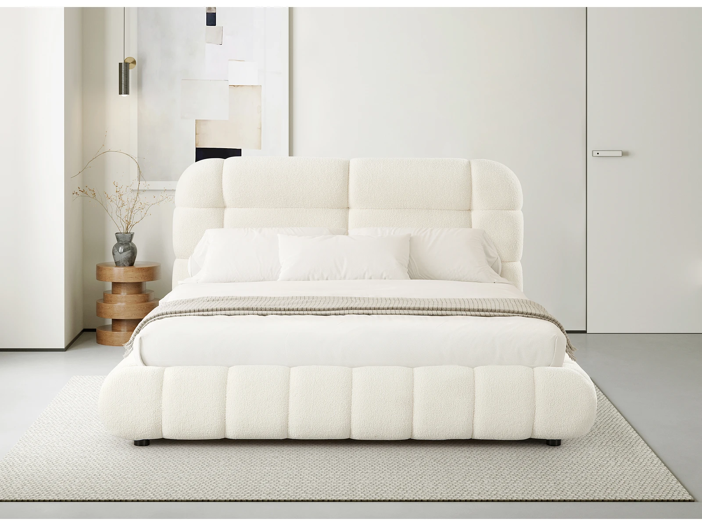
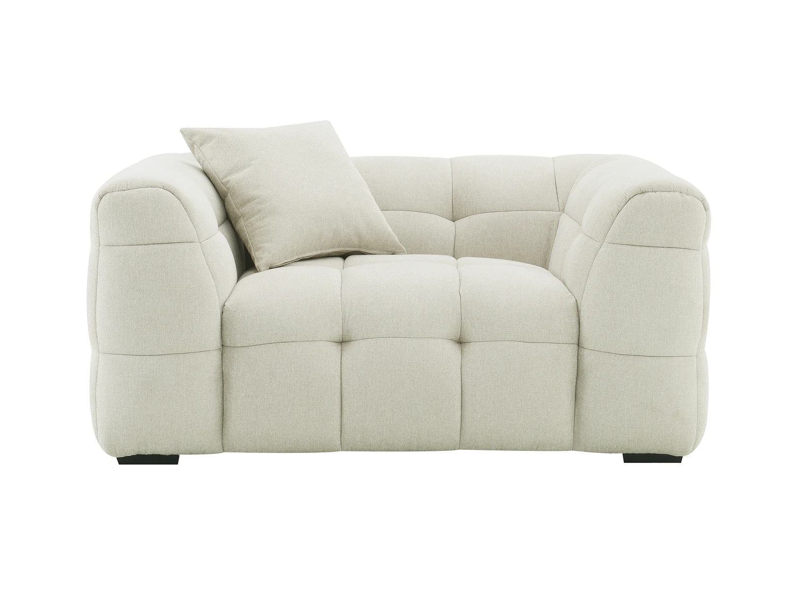
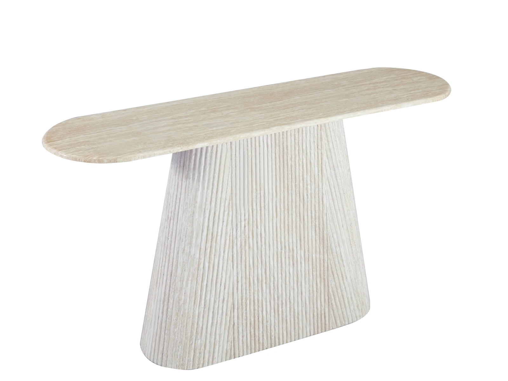

ChinaFurniture sourcingQCConsolidation
Furniture sourcing, inspection and consolidation — one team, many factories.

The detail check
We inspect the details
before they become a problem.
What we take off your desk
One point of contact.
From first sketch to final container.
Choose the whole route, or hand us the part that is slowing you down.
Supplier search & comparison
We shortlist factories against your brief, not our catalogue.
Sampling coordination
Samples, revisions and approvals kept in one thread.
Order follow-up
We chase production dates before they become problems.
Quality inspection
Checkpoints during production and before loading.
Consolidation & shipping
Multiple suppliers, one container plan.
Documents & issue handling
Packing lists, invoices and problems handled locally.
Start where you are
You do not need a perfect brief.
Start with what you know.
Already have a factory
Keep your factory.
We can handle the rest.
QC, follow-up and consolidation, without changing the relationship you already have.
Start hereHave a product idea
Bring the idea.
We will find the route.
We match the brief to the right factory, then manage the path to a sample.
Start hereHave several suppliers
Keep your suppliers.
We will connect the dots.
Orders, inspections and container plans coordinated across the group.
Start hereWhat we source
A working range.
Not a wall of SKUs.
Beds, sofas, tables, chairs and sofa beds. The mix changes with the brief.




How it moves
Five checkpoints.
One continuous thread.
Brief
Category, quantity, port, timing and the stage you are at.
Factory match
Shortlist, compare and confirm the right production partner.
Sample
Materials, construction and revisions, approved in one thread.
Production & QC
Checkpoints before, during and before loading.
Consolidate & ship
Multiple suppliers, one container plan and one document set.
Typical project scenarios
Different starting points.
One way through.
Existing factory / QC + consolidation
A buyer with a factory, but no local eyes.
We keep the factory relationship intact, add production checkpoints and bring the order into a container plan.
Product idea / sourcing + sampling
A retailer adding a category.
We translate a rough brief into a factory shortlist, then manage samples and revisions until the product is ready.
Multi-supplier / follow-up + documents
A trader holding several orders.
We follow each supplier, line up inspections and consolidate the paperwork before the goods leave.
Why KALIS TORIK
You can keep your factory.
Or let us find one.
More than two decades on the China side. We do not own the factories; we manage the route between them.
One brief, many suppliers.
We work to your brief, not a fixed catalogue.
One team across sourcing, QC and consolidation.
Next step
Tell us what you are trying to buy.
A short brief is enough. We will reply with the right questions and a route.
What to include
- Product category or reference
- Estimated quantity
- Destination port
- Timing and current stage